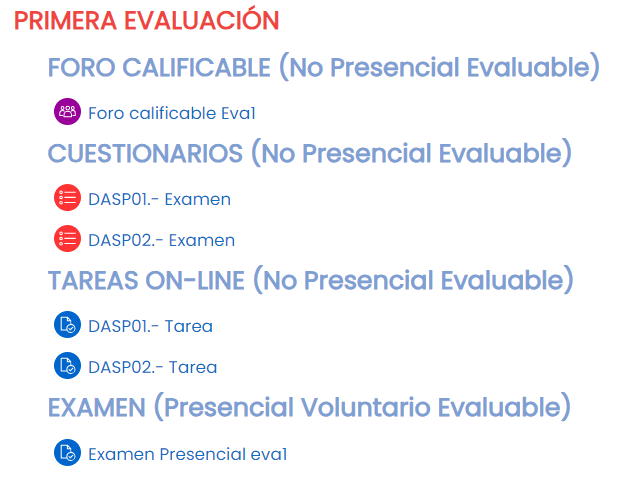

La parte central del curso la ocupa la Zona de Contenido. Aquí pasarás la mayor parte del curso, estudiando las diferentes unidades de trabajo, planteando dudas a tu profesor o profesora y entregando tareas y actividades. La Zona de Contenidos se divide en cuatro partes: Inicio, Comunicación, Unidades de Trabajo y 1ª y 2ª Convocatoria.
Zona de Contenidos
{kind=link}
Inicio
Foro de avisos
La pestaña inicio contiene un foro de avisos a través del cual el profesora o profesora del módulo comunicará eventos o novedades de interés.
Organización de la evaluación
Este cuadro recoge la organización del curso con informaciones como el nombre del profesor, fechas de inicio y fin de cada una de las evaluaciones, fecha y lugar de las pruebas presenciales y las unidades de trabajo que se trabajarán en cada evaluación.
{kind=link}
Recursos generales
Aquí podrás encontrar recursos como la guía de uso de la plataforma EaD, la programación y guía didáctica del módulo y un glosario para consultar todos los términos que se utilizan en las unidades de trabajo del módulo.
Comunicación
Foros
En la pestaña comunicación podréis encontrar diferentes foros como los foros de dudas con los que comunicarte con el profesor o profesora del módulo así como con el resto de tus compañeros. Cada módulo tendrá al menos un foro de dudas por cada evaluación además de los que el profesor o profesora considere conveniente como un foro de presentación.
No olvides respetar la netiqueta al publicar o responder mensajes además de comprobar si tu duda ya ha sido solucionada con anterioridad.
Para evitar recibir una notificación por cada mensaje que se publique en los foros puedes ajustar las preferencias de subscripción en la configuración del foro dentro de las preferencias de usuario siempre que el foro no sea de subscripción forzosa.
Tu profesor o profesora publicará un enlace para que puedas conectar a las diferentes tutorías semanales o quincenales a través de Google Meet. Recuerda mantener la cámara encendida y los micrófonos cerrados a no ser que el profesor o profesora indique lo contrario.
Unidades de Trabajo
Cada unidad de trabajo que compone el módulo presenta la misma estructura: Orientaciones, Contenidos, Recursos y Evaluación.
Orientaciones
El archivo de orientaciones contiene una breve descripción de la unidad de trabajo correspondiente, un resumen de los contenidos, objetivos, temporalización y consejos y recomendaciones.
Contenidos
Aquí es donde vas a encontrar el grueso de la unidad de trabajo, en el que, organizado en apartados y subapartados, puedes encontrar el desarrollo de la unidad junto con actividades, elementos didácticos muy variados y recomendaciones para su aprovechamiento. Los contenidos se presentan en cinco formatos diferentes para facilitar su visualización y adaptarse al perfil de cada alumno.
- SCORM: Es un estándar técnico para el e-learning que permite la interoperabilidad, accesibilidad y reutilización de contenidos educativos digitales entre diferentes plataformas educativas.
- WEB: Los contenidos se presentan en un formato de menús navegables desplegables que facilita la navegación entre diferentes nodos.
- P.ÚNICA: Igual que el anterior pero todo el contenido de la unidad se presenta en una única página.
- EPUB: Formato para cargar en libros electrónicos.
- IMPRIMIBLE: El contenido de la unidad se presenta en un único documento PDF imprimible.
{kind=link}
Recursos
En este apartado encontrarás el mapa conceptual de la unidad, que es un esquema en el que se detalla el contenido de la UT de forma que cada elemento viene descrito de forma gráfica. Se trata de un gráfico en el que los nodos están enlazados por frases.
{kind=link}
Además del mapa conceptual de la unidad, en este apartado tu profesor o profesora podrá subir otros recursos que considere interesantes como enlaces a páginas web, imágenes, presentaciones, hojas de cálculo, clips de vídeo, etc.
Evaluación
Este enlace conduce a la pestaña 1ª convocatoria, donde encontrarás las actividades que tendrás que realizar durante el curso divididas por evaluaciones.
1ª y 2ª Convocatoria
Las pestañas 1ª y 2ª Convocatoria contienen las pruebas calificables del módulo profesional: cuestionarios, tareas y pruebas presenciales (voluntarias y obligatorias) que tendrás que realizar durante el curso. Para facilitar la navegación esta sección está dividida en evaluaciones. Además de tareas y cuestionarios algunos profesores pueden incluir un foro calificable que se tiene en cuenta para calcular tu nota final.

- FORO CALIFICABLE: En el foro calificable tu profesor o profesora te planteará algún tema de opinión, reto o actividad en el que tendrás que participar para obtener una calificación. Al tratarse de un foro puedes comprobar las respuestas de tus compañeros pero sólo tras haber realizado tu propia aportación.
- CUESTIONARIOS: Cada unidad de trabajo cuenta con un cuestionario de autoevaluación. Dispones de tres intentos para realizar cada cuestionario y tu nota en este apartado será la mayor de los tres intentos realizados.
- TAREAS ON-LINE: Tendrás que entregar una tarea con las instrucciones que indique tu profesor o profesora. Lee estas instrucciones detalladamente para respetar cuestiones como el plazo de entrega, el formato o el nombre de tu entrega.
- TAREAS PRESENCIALES: Sólo para la modalidad semipresencial, durante la evaluación realizarás prácticas obligatorias en el centro. Los detalles de la práctica se recogerán aquí.
- EXAMEN PRESENCIAL: Al finalizar cada evaluación puedes acudir de manera voluntaria a la prueba presencial de carácter eliminatorio. Los detalles del examen incluyendo características del mismo, unidades de trabajo, lugar, fecha y hora se recogerán aquí.
- Nunca olvide que la persona que lee el mensaje es otro ser humano con sentimientos que pueden ser lastimados.
- Adhiérase a los mismos estándares de comportamiento en línea que usted sigue en la vida real.
- Escribir todo en mayúsculas se considera como gritar y, además, dificulta la lectura.
- Respete el tiempo y el ancho de banda de otras personas.
- Muestre el lado bueno de sí mismo mientras se mantenga en línea.
- Comparta sus conocimientos con la comunidad.
- Ayude a mantener los debates en un ambiente sano y educativo.
- Respete la privacidad de terceras personas.
- No abuse de su poder o de las ventajas que pueda usted tener.
- Excuse los errores de otros. Comprenda los errores de los demás igual que usted espera que los demás comprendan los suyos.
Obra publicada con Licencia Creative Commons Reconocimiento Compartir igual 4.0